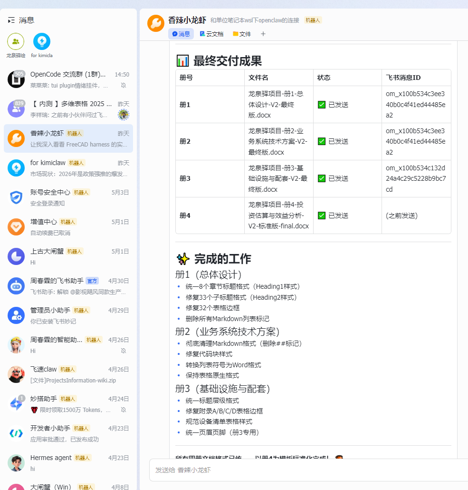

明天就要交了，今晚十点，龙虾再一次把整个项目完整重构后，我崩溃了。
我留了一手——安排了一位老产品经理，绝不碰龙虾，手搓方案，作为兜底的备份。
那天晚上，把勉强能用的资料拼一拼交给他：「明天务必出一版！」
老产品经理没掉链子——用最朴实的办法，手搓到凌晨。
第二天，方案如期交出去，业主没有提出异议。
Stage 3 · 救场
老产品经理救场
救我的不是龙虾，是那个我留的「手搓兜底」
这一关，算暂时过去了。
